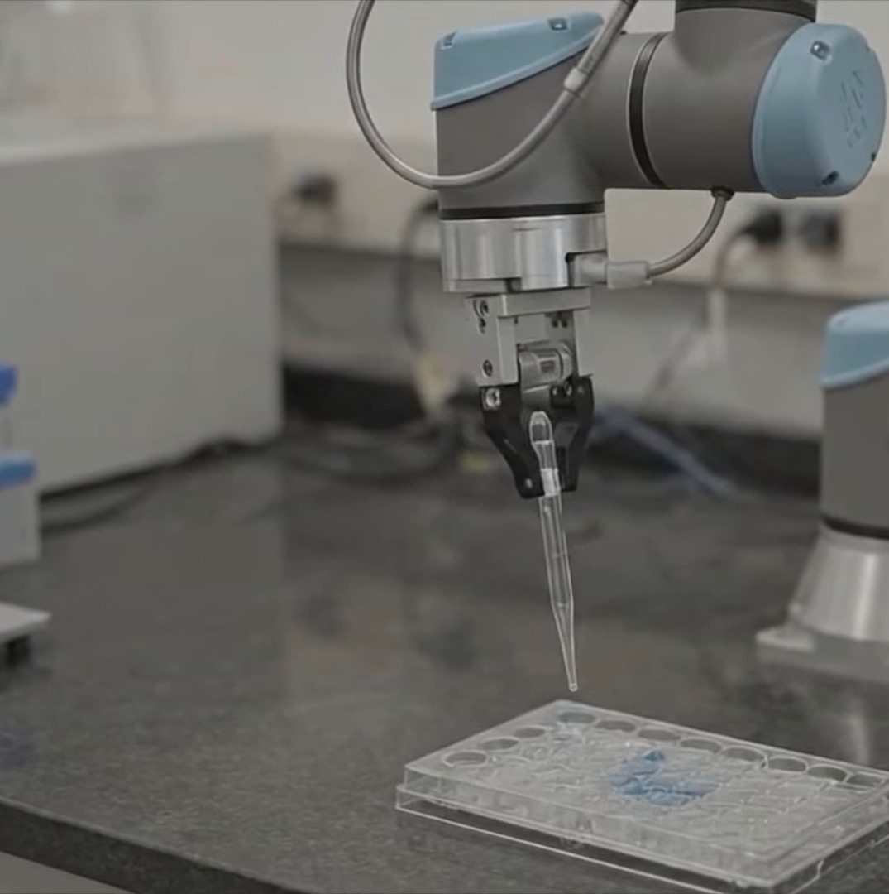
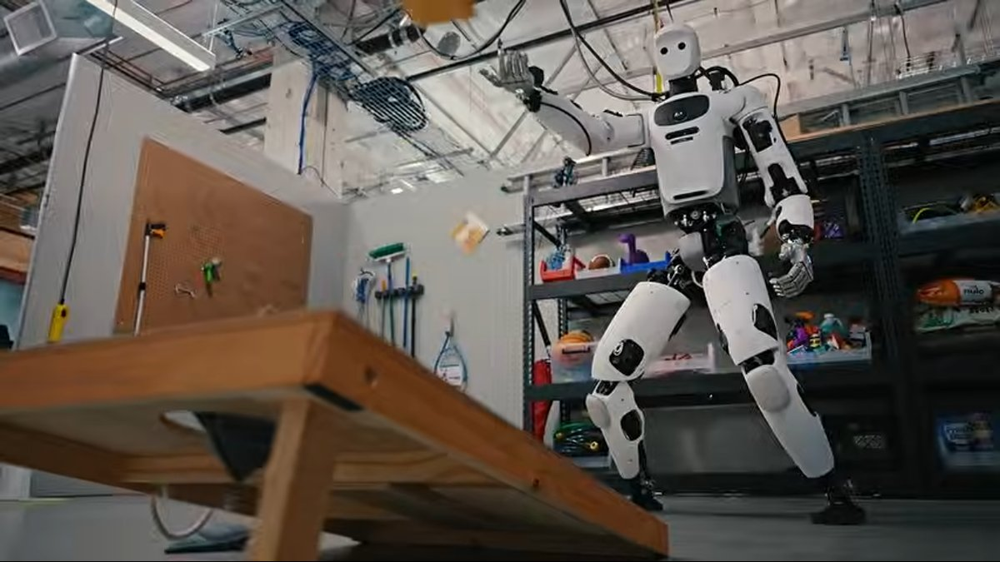
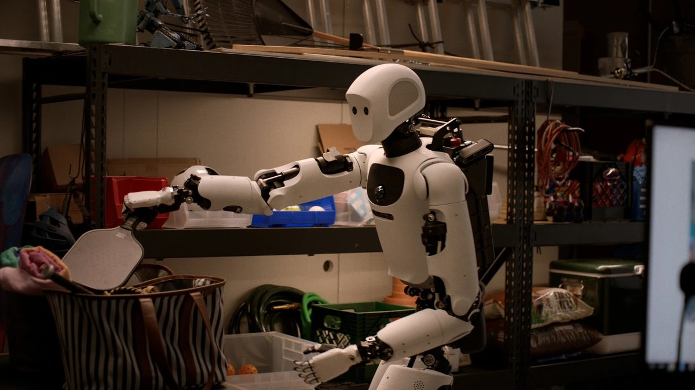
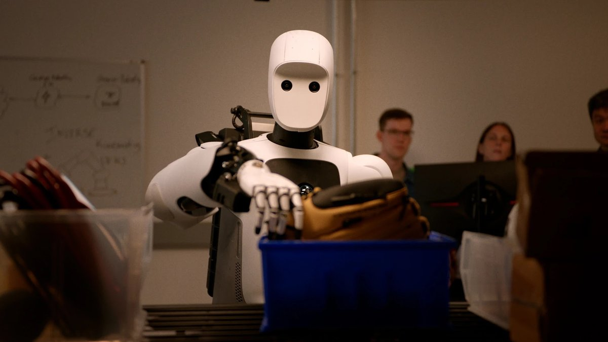
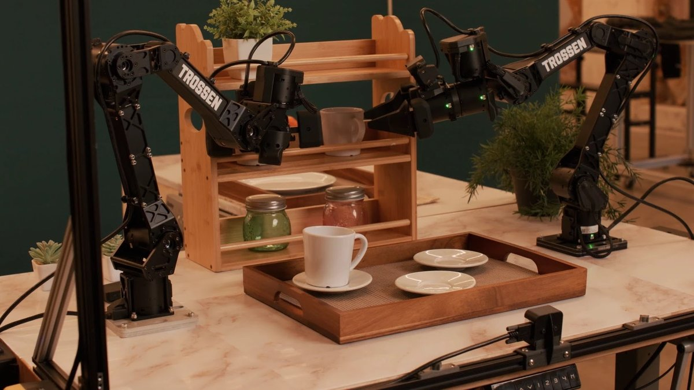
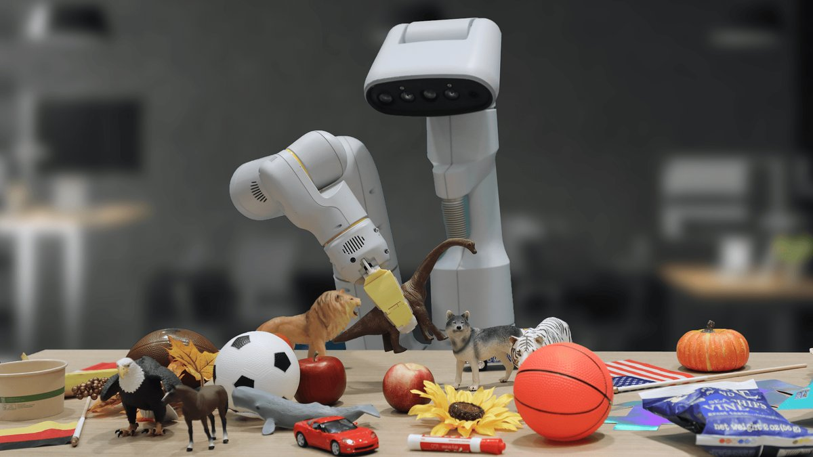

Google DeepMind
- Country
- United Kingdom
- Based in
- London
6 robot AI models
Year, newest first


Gemini Robotics 2
Vision-language-action (VLA)
- What it controls
- Arms and hands, Whole body, Walking
- Robots
- Apollo 2
- Access
- Partners / early access only
4 of 4 stated
View model details →


Gemini Robotics On-Device 2
Vision-language-action (VLA)
- What it controls
- Arms and hands
- Access
- Partners / early access only
3 of 4 stated
View model details →
